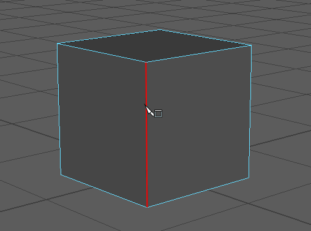
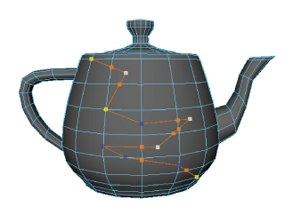
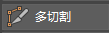
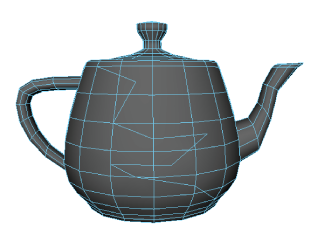

通过使用多切割工具绘制新边，您可以采用交互式方式在网格上划分组件。这使您能够快速更改网格的拓扑。
使用多切割工具切割面
- 选择要切割的网格。
- 打开多切割工具。
- （可选）启用对象、世界或拓扑对称，以便在网格的两侧进行切割。请参见激活或取消激活对称。
- （可选）为要粘附到的切割边设置激活的曲面。
- 单击现有边或顶点作为起点。必须从顶点或边开始切割。如果从面开始切割，还将选择最近的顶点，从而创建两个切割点。
提示： 按住 Shift 键并单击某条边以从其中点开始绘制。
注： 放置切割点时，您可以使用栅格（按住 X 键）或点（按住 V 键）捕捉。
- 使用显示的百分比指示器进行精确切割。

- 单击其他边、顶点或面，以将这些点添加到切割线。
插入分隔多个面的点时，将自动创建任何必需的中间点。您也可以沿同一条边执行多个切割。

-
此外，当
多切割工具处于活动状态时，您还可通过下列操作以交互方式编辑切割线：
- 完成后，执行下列操作之一，对面进行切割：
- 按 Enter 键
- 单击鼠标右键
- 切换到另一个工具
- 再次单击  以退出工具
